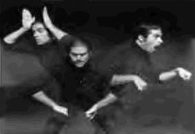

hat is it like to be deaf?
hat is it like to be deaf? 
 D & B poetry.
D & B poetry.
hat is it like to be deaf?
People have asked me.
Deaf? Oh, hmmm, how do I explain that?
Simply, I can't hear.
It is similar to a goldfish in a bowl.
Always observing things going on.
People talking all the time.
It is being a man on his own island
Among foreigners.
Relatives say hi and bye.
But I sit for five hours among them.
Talking great pleasure at amusing babies.
Reading books, resting, helping out with food.
Upon seeing great laughter, crying, upsetness.
Inquire only to meet with "Never mind",
"Oh, it is not important,"
Getting such a summarized statement
of whole story.
Little do they know how truly miserable I am.
People are in control of language usage,
I am at loss and real uncomfortable! Always feeling of being an outsider
Among the hearing people
Even if it was not their intention.
Always assume that I am part of them
By my physical presence, not understanding
The importance of communication.
Weekend and Family Reunion.
Facing the choice between the family commitment
And Deaf friends,
I must make the choice constantly,
Any wonder why I choose Deaf friends???
Before I realized, it is already 2 a.m.,
Whereas I anxiously look at the clock
Every few minutes in the family reunion.
Our communication flows back and forth,
Catching up with little trivials, our daily life,
Our frustration in the bigger world,
Seeking the mutual understanding,
So magical to me
So attuned to each other's feelings.
Truly happiness so important.
Of various color, religious, short or tall,
Then I do among my own hearing relatives.
And wonder why?
Our language is common.
We understand each other.
Of environment, that is, communication,
People panic and retreat to avoidance,
Deaf people are like plague.
With dreams, desires and needs
Of belong just like everyone else.
 ove poem
ove poem
I've been watching you watching the
interpreter. She is just to the left of
the speaker, and always slightly behind
so that you are always slightly behind
too, your face registering surprise
when the surprise has already been,
your smile on the heels of the other smiles,
your laugh coming after the wave of
laughter subsides. I love the lag time, the
pause between word and sign, the space
between signifier and signifier and signified.
I want to slip inside that space and sit
across from you, legs crossed, hands
folded in my lap. If I make myself very
small, inconspicuous, insignificant as
another pair of antennae on the wall,
just watching you, quietly, watching the
interpreter, could I, could we, fit?
 DEAF A TO Z WAY OF WELCOMING Y2K
DEAF A TO Z WAY OF WELCOMING Y2K
A - All deaf people are first class citizens
B - Be patient in communications
C - Communication needs are a prioirity with the deaf
D - Deafness is nothing to be ashamed of
E - E-mail has shrunk the Deaf World
G - Go and be what we want to be is the goal for all deaf
H - Hard of Hearing needs are also important
I - Interpreters to be fully available all the time
J - Just be patient is what we tell hearing people
K - Kill all stereotypes hearing people have of us
L - Let us show the world what we can do
M - Movies, all of them, need to be captioned
N - No more discrimination against the deaf
O - Operas should have sign language sopranos
P - Protect all of our rights and needs as deaf citizens
Q - Quit hiding our deafness
R - Ready to show the hearing world what we can do
S - See what we, the deaf, can do in all areas
T - TV programs, all of them, need to be captioned
U - U-turns should not be the route for ambitious deaf
V - Value ourselves as deaf individuals
W - Weitbrecht forever changed our life
X - X is the spot where we and hearing meet half ways
Y - Year by year will usher in better things for the deaf
Z - Zoos to be fully accessible to the deaf
 ey Wave
ey Wave
Deaf don't name names.
Not the way Hearing do.
Face to face, what need for names?
Me to you, hey will do.
Hearing eyes say hey is rude,
hey is talking out of turn.
Deaf say Hearing eyes are rude
to turn away in the middle of talk.
Me to you, between us two,
life is short. Talk is gold.
Hey is all we'll ever need to
make us rich before we're old.
earning from the master
Gather 'round, sweet butterflies.
Let your wings take peaceful rest.
Gather round, watch the master
Warm the air with her caress.
Watch the words flow so smoothly
From her hands with artful grace;
Watch the grammar form so neatly
In the contours of her face.
Watch her eyes move so quickly
As they reach into her soul
And reflect deepest meanings
In the wisdom that unfolds.
Watch and learn, sweet butterflies;
Remember well what you've seen
If you wish to write poems
With the rhythm of your wings.
Watch and learn from the master
How a sonnet can be seen
In the patterns of your flights
And the rhythms of your wings.
 eaf Culture 101
eaf Culture 101
In the Deaf world Deaf
is good. That's the premise
that sets the Deaf world
apart. So when the audiologist says
to two Deaf parents,
"I'm sorry, your baby
is profoundly deaf," they do not
weep or mourn or
blame themselves or
God. They rejoice.
They embrace each other and even
the confused audiologist who
is the bearer of great
tidings. Healthy Deaf babies
are good, the more the better.
Deaf brothers, Deaf sisters,
Deaf mothers and fathers
confer considerable status
in the Deaf world. Deaf
families are a kind of
Deaf aristocracy
where Deaf is the currency.
Deaf grandmothers and grandfathers,
Deaf aunts and uncles, Deaf nieces
and nephews and cousins and more
Deaf cousins. There are even
some who are third or fourth
or fifth generation Deaf.
These are the Deaf royalty.
Sometimes you can see them
surrounded by dilating circles
of envious, awestruck, Deaf eyes
just listening to the stories
told in elegant, flowing ASL--
stories of family trees
hearkening all the way back to the first
Deaf community on Martha's Vineyard,
or maybe back to the very first
school for the Deaf in Paris, France;
to Laurent Clerc and his teacher
Jean Massieu and his teacher
the Abbe Sicard who wasn't deaf himself
but who nearly lost his head when the heads
of the aristocrats and clergy
began to roll in the streets.
But he didn't lose his head, and it was only
because the Deaf of Paris loved him
enough to write a letter
to the authorities on his behalf
in elegant, flowing, flawless French,
calling him their father and their teacher,
and winning his release.
 rother Harold
rother Harold
"Brother Harold was a deaf man,"
"Brother Harold could not speak,
"Brother Harold was a sinner,
And the people in the chapel
But as I sat among the mourners
"Are deaf folks simply hearing folks
"Are black folks just like white folks
"Or is each of us unique
I believe if there's a heaven
And I believe if there's a God.
 oem in Sign Language
oem in Sign Language
What does it mean
that the thumb of this poem
drags its pink nail
down over the closed
mouth of this poem?
Is it in pain?
Can it not speak?
Is this prosodic
or phonemic,
this raised eyebrow
like a circumflex over
the I of this poem?
So far it only
questions itself.
It shows a certain
manual dexterity,
but who can understand it?
Its face and its hands,
its tilting head,
its eye gaze--
beautiful--
its movement
and its invention--
the whole of its body shows
that it has passion...
But how will it persuade
with no voice?
 y Deafness
y Deafness
I went Deaf over 25 years..
I was studying Medicine at the end..
I almost dropped a baby on the floor of the Obstetrics ward.
all the masks were on and I was OUT!
That was a hard lesson for me..
and I gave up medicine..
There were lots of hard lessons for me..
We all have them..
No doubt..
Since then,
I have learned a lot.
I have learned to love gardening and plants..
They are silent like we, the Deaf, are..
And they love life voraciously like we do..
They ask no questions..
But they give and give of themselves voluptuously..
Silently they give and give..
CAN WE DO THAT??
I feel I am like a tree..
Or a sturdy bush..
Cut down to it's core..
Cut down to MY Core..
No joke here..
Remember..
It's me I am writing about..
I was cut down to my beginings..
Back to my roots I was pruned..
But..
I survived..
And sprung up soundly..
Soundlessly..
Now I am new shoots..
Looking for myself in the sun.
Silently..
New shoots..
New leaves..
New life..
Springing from my new being..
I enjoy my new being inmensely..
I enjoy myself and my silence..
They out there.. The Hearing.. Perturb me with their questions..
Perturb me with their mouth movements..
I tell them that their mouth movements make me dizzy..
But they do it anyway..
What the heck!!
But I tough it out..
I see the strong trees living by the Hearing freeways..
Lots of noise going on out there..
But they keep green and silent..
Growing in the sun..
I can do that too..
Easily..
I turn my eyes to the sun..
I ignore their noise..
I live and awake..
Welcoming each day with the warm friendship of all the silent beings that surround me.
I give myself to the joy of life each day.
Silence has opened my heart to tenderness..
Silence has allowed my fingers to feel the soft gentleness of delicate existence..
Please Deaf People..
Let us count always our blessings..
Please All People..
Let us count our blessings..
And let us smile silently towards the sun..
Let us send love to those we care for..
They care for us..
Even though we can't understand what they say to us..
They still care..
Trying in their way..
Let us all grow joyfully to what we may reach..
Let us treasure our individual existences..
And bless our surrounding beings..
We are all tender children of God..
We are all before our maker..
Silent in the sun..
All of us..
Amen
 ur deafness
ur deafness
We cannot hear anything at all,
Cannot hear voices,
Cannot hear our own voices,
Cannot hear laughter,
Cannot hear the sound of playing,
Cannot hear the screams,
Cannot hear weeping,
Cannot hear the scolding,
Cannot hear love and peace in voices of beloved ones,
Cannot hear our names being announced,
Cannot hear the beat of the music,
Cannot hear wind whistling through leaves on the trees,
Cannot hear the oceans; waves beating upon shores,
Cannot hear the footsteps in the darkness,
 houghts of a deaf child
houghts of a deaf child
My family knew that I was deaf
When I was only three,
and since then fifteen years ago
Have never signed to me.
I know when I'm around the house,
I try and use my voice,
It makes them feel more comfortable;
For me, I have no choice.
I try, communicate their way --
Uncomfortable for me.
My parents wouldn't learn to sign
Ashamed or apathy?
I never cared about the sounds of
radio and bands;
What hurts me is, I never heard
My parent's signing hands.
 o sound I hear from day to day
o sound I hear from day to day
A silent world is where I stay
A world that sometimes causes fear
or brings to eye a sudden tear
I try so hard to talk to you
but those who know my language, few
For I speak with my hands
They write in the air
And I hear with my eyes
They watch with care
Don't fear because you don't understand
Become a friend, clasp my hand
I need your help, I need your hands
To really help me understand
Come give me your hand and I'll show you
how to sing beautiful songs without a sound.
To write your name in the air
To make my world easier to bear
I'm reaching out, take my hand
Learn my language, understand
There's so much I want to share with you
If only you'll take time
if only you care.
end me a pup (On the death of a guide dog)
I will lend to you for awhile,
a pup, God said,
For you to love him while he lives
and mourn for him when he's dead.
Maybe for twelve or fourteen years,
or maybe two or three
But will you, 'till I call him back,
take care of him for me.
He'll bring his charms to gladden you
and (should his stay be brief)
you'll always have his memories
as solace for your grief.
I cannot promise he will stay,
since all from earth return
But there are lessons taught below
I want this pup to learn.
I've looked the whole world over
in search of teachers true
And from the folk that crowd's life's land
I have chosen you.
Now will you give him all your love
Nor think the labour vain,
Nor hate me when I come to take my Pup back again.
I fancied that I heard them say
"Dear Lord Thy Will be Done,"
For all the joys this Pup will bring,
the risk of grief we'll run.
We'll shelter him with tenderness
we'll love him while we may
And for the happiness we've known forever grateful stay
But should you call him back
much sooner than we've planned,
We'll brave the bitter grief that comes,
and try to understand.
If, by our love, we've managed,
your wishes to achieve
In memory of him we loved,
to help us while we grieve,
When our faithful bundle departs this world of strife,
We'll have yet another Pup and love him all his life.
Return to the table of contents for "Humor and stories for interpreters".